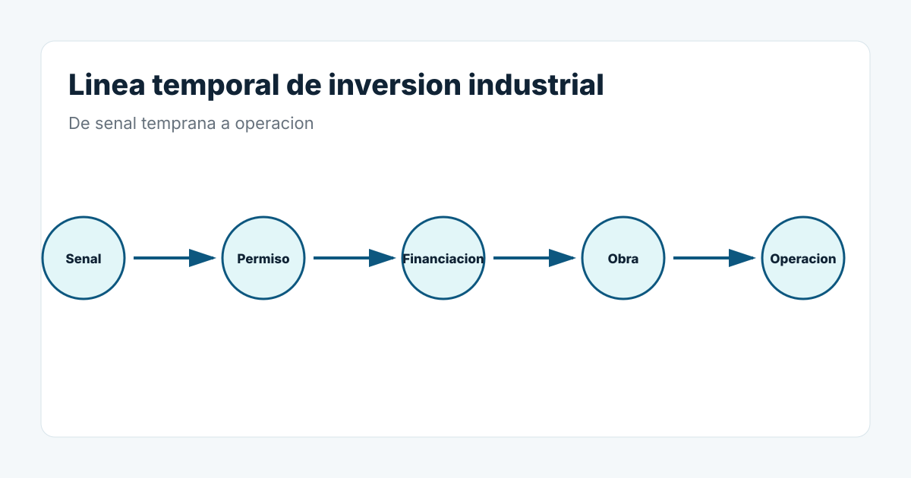

1. Permisos y expedientes
Licencias, evaluacion ambiental, informacion publica o cambios de capacidad pueden aparecer mucho antes de la puesta en marcha.
2. Ayudas y financiacion
Una ayuda para digitalizacion, descarbonizacion o modernizacion indica que existe un proyecto financiado o en preparacion. No confirma el proveedor final, pero abre una ventana de seguimiento.
3. Contratacion tecnica
Nuevos puestos de ingenieria, mantenimiento, produccion, calidad o automatizacion pueden acompanar una ampliacion o un nuevo proyecto.
4. Suelo, naves y obras
Una nueva nave, ampliacion o cambio de emplazamiento puede preceder a nuevas instalaciones productivas.
5. Nuevos productos
Un cambio de formato, nueva gama o nueva tecnologia puede requerir adaptar procesos y maquinaria.
6. Nueva capacidad
Cuando una empresa habla de mas produccion, nuevos turnos o aumento de capacidad, merece investigar que activos y procesos cambiaran.
7. Ferias y lanzamientos
En OEM y fabricantes de maquinaria, un nuevo equipo o plataforma puede anticipar nuevas decisiones de automatizacion y suministro.
8. Varias senales juntas
Una ayuda por si sola puede ser debil. Una ayuda junto a contratacion, permiso y nueva nave describe una situacion mucho mas interesante.
De la senal a la accion
El objetivo no es afirmar que la compra existe. Es llegar a una respuesta comercial mas util: que cambia, que evidencia existe, que necesidad es plausible, que falta por confirmar y cuando conviene actuar.